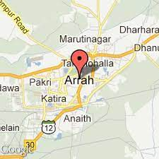

Amazing Article
Avinash Pandey
Arrah is a city located in Bihar. The government of
Bihar aims to empower the people of Arrah through Information
Technology awareness and inseminating free knowledge regarding
business / manufacturing procedures used in industries. The government
also aims to promote tourism and nurture the people's cultural
heritage; and make Arrah a place of first choice to live in the world.
Arrah was the scene of fighting during the Indian Mutiny, 1857
when Kunwar Singh attacked the British.
History of Arrah
The name of Arrah town is associated with goddess Aranya Devi. It is said that once there was a king named Moradhwaj, who was well known for his charity activities all over India. Though he was rich and happy he had one grief tormenting him. The reason for this torment was that he had no son. The King and the Queen fervently prayed to goddess Durga to bless them with a son. The goddess appeared to the king Moradhwaj in his dream and blessed him with a son. While the king were living happily, the king had a very shocking dream that Goddess Durga wished that the king and queen should stand before the altar along with their son in between them and they should ply the saw (Arrah) from the prince's head. The saw should be plied in such a way that the body of the boy gets split into two halves. It was also indicated in the dream that the king and queen should stand tearless while blood would flood the altar. The dream disturbed the king day and night and he disclosed it to his wife. As they were true devotees of goddess Durga, they decided to carry out her desire as she revealed in the dream. The prince on knowing this was not at all afraid. Rather, he felt happy to become a cause to fulfill the divine will. As the time of ordeal came, they all assembled before the altar of goddess Durga. When the king and the queen put the saw on the head of the prince the whole place was filled with soft glow of light and fragrance of flowers. Goddess Durga appeared in all her glory riding on a lion with a halo round her face and her hands were decorated with jewels and a crown of gold on her head. She blessed the couple and the prince for their undaunted devotion to her and then disappeared. According to myths, the place where the scene of the so-called sacrifice, came to be known as Arrah (saw). After which king Moradhwaj built a temple at Arrah in the name of goddess Durga. This temple is known today as Aranya Devi temple. Hundreds of worshippers and devotees flock the place daily.
Culture of Arrah
The people of Arrah ardently worships goddess Aranya Devi. Arrah town has a temple of goddess Aranya Devi at the Chowk area. The people believe that she would fulfil their desires and wishes. They worship her for happiness, pleasure, social status, money, etc. Childless people pray to her for blessing them with a child. The offerings to the goddess mainly consist of bread and cooked sweetened gram. Some devotees pour a pitcher of water on her head as part of their devotion.